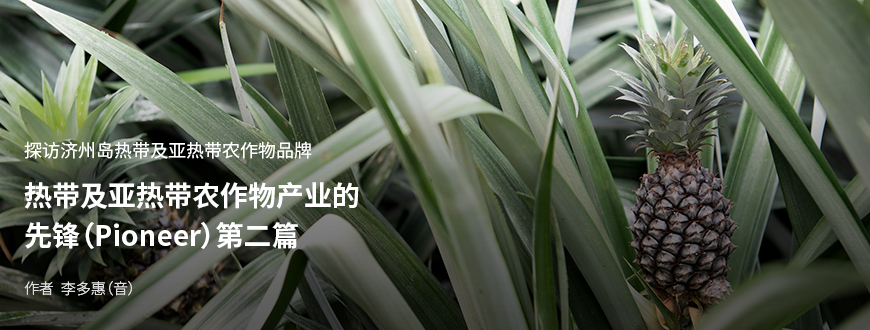
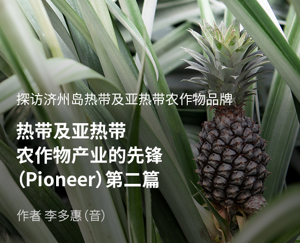
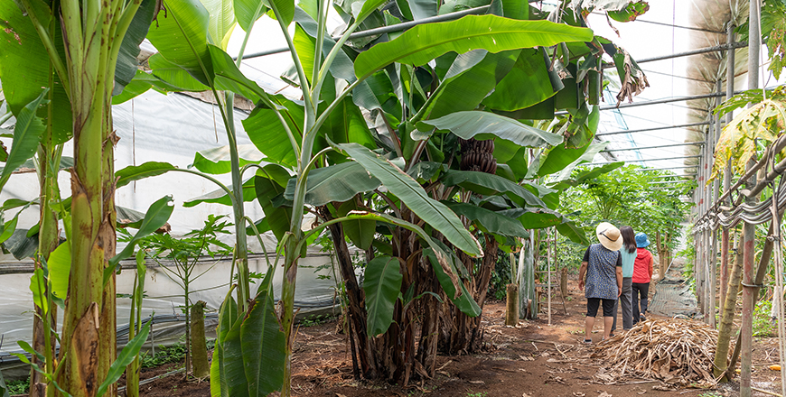
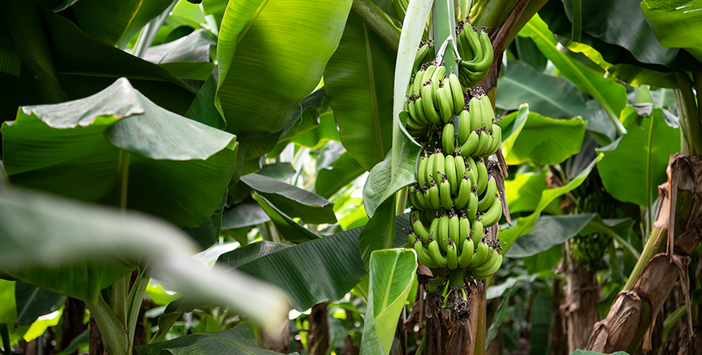
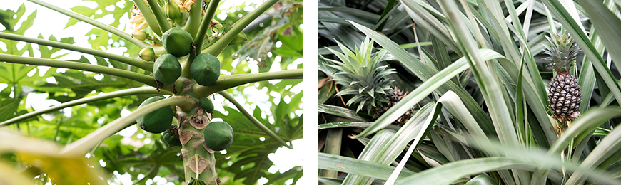
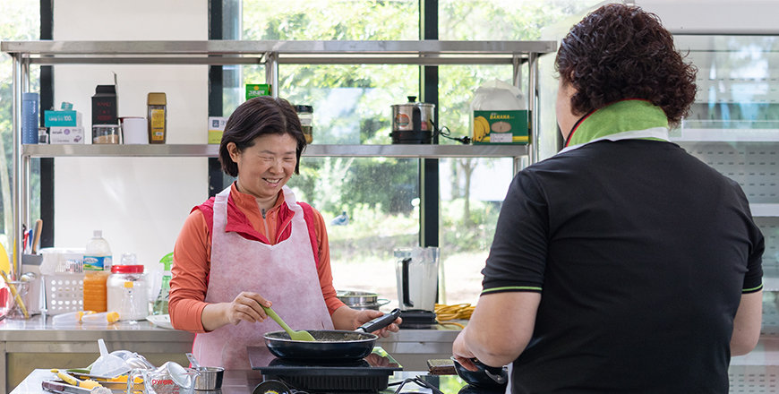
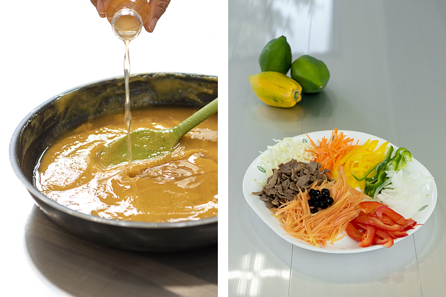

기획취재콘텐츠
- Home
- 제주라이프
- 기획취재콘텐츠
热带及亚热带农作物产业的先锋（Pioneer） 第二篇새로운 글



引领热带及亚热带农作物的第六产业化——“YUJINFANG”
走进两米多高的香蕉树密密麻麻排列着的塑料大棚，每棵树上都结满了香蕉，等待着收获。在其他塑料大棚中，可以看到在长长的叶子之间结出的菠萝，另一边则是甘蔗、芒果、木瓜等多种亚热带农作物。在露地栽种的野樱莓果树上挂满了诱人的野樱莓果实。仓库兼体验空间一侧的橱柜内陈列着用香蕉、菠萝等亚热带农作物制成的果酱和食醋。以上就是一路陪伴济州岛香蕉的发展历程的农场——YUJINFANG的景象。

- YUJINFANG农场塑料大棚内部全貌 ⓒ尹昭真（音） -
YUJINFANG的代表金顺日（音）在2012年实验栽培了从农业技术院得到的香蕉苗，开始涉足热带水果农场。她在品尝实验栽培的香蕉后发现味道和果香都比市面上出售的香蕉更加香甜。以前每次食用进口的热带水果时，身体总是会有些不适，但是食用没有经过药品和防腐处理的绿色香蕉后，即便身体敏感、脆弱，也没有引起不适，反而变得更加舒适。于是，金顺日代表认为，对于寻找健康水果的消费者来说，这将具有充分的吸引力，因此于2016年种植了600株香蕉树，并从2016年开始正式生产香蕉。
因为最重要的就是将绿色香蕉的原汁原味传递给消费者，因此YUJINFANG在栽培过程中没有使用对身体有害的药剂。因为没有喷洒药剂，所以害虫问题令她非常头痛。尤其是热带农作物与其他农作物相比，会出现更多的害虫和蜘蛛网。于是，就解决绿色香蕉栽培设施的问题，金顺日代表与她的丈夫一起进行了商讨，就这样诞生了“高三角塑料大棚”。

- 在高三角塑料大棚内绿色栽培的香蕉 ⓒ尹昭真（音） -
采用了将两侧封闭，安装可打开的三角形顶棚，通过热空气上升的原理，自动进行热交换与内部空气循环的设计。可以通过热交换和内部空气循环，缩小大棚内上部与下部的温差。之前在普通的塑料大棚里栽种香蕉树时，由于香蕉树高，因此上部经常因为过热导致树叶腐烂，下部又因不能正常受热导致树叶无法生长。但通过“高三角塑料大棚”缩小温差后，上下部都能够维持适宜香蕉生长的温度，同时也减少了从两侧进出的害虫。由于“高三角塑料大棚”对阻止害虫出入与农作物栽培有显著效果，还于2016年注册了专利，正式名称为“通风型三角顶塑料大棚”。
继成功栽培韩国产香蕉后，又开始种植了木瓜。可用作蔬菜的青木瓜使用范围很广，因此通过直销就实现了可观的销售量。由此确定了热带及亚热带农作物在韩国的发展可行性，正式建立了实验栽培栋。在自行实施黄木瓜、甘蔗、菠萝等多种亚热带农作物的栽培实验后，针对商品价值高、栽培技术稳定的农作物，进行了正式种植。最近开始种植和销售的菠萝就是代表性例子。

- YUJINFANG农场栽培的青木瓜 ⓒ尹昭真（音） -
为提高热带及亚热带农作物的消费量，确保大众性，开始运营体验项目，同时研发并销售了加工品，正式启动热带及亚热带农作物的第六产业。YUJINFANG运营着在31,404平方米（9,500坪）规模的农场内可以直接收获香蕉、木瓜、野樱莓、菠萝等，并以此来制作果酱和食醋的体验项目。体验场的另一侧则出售着用野樱莓、香蕉、菠萝等收获物加工的果酱和食醋。不仅如此，还使用丑橘、柑橘、青桔制作了果酱、食醋、手工蜜茶等，在体验场和网上的直销市场进行着销售。香蕉则是制成了半干燥香蕉片。
- YUJINFANG生产的果酱、食醋等亚热带水果加工食品 ⓒ尹昭真（音） -
只有从侧面切片才能保留香蕉原汁原味的香甜。半干燥香蕉片是香甜的健康零食，具有很高的人气。果酱和食醋体验项目的人流量也比较稳定。大家对体验项目的满意度都比较高。
- YUJINFANG代表金顺日
金顺日代表在思考如何才能让热带及亚热带农作物更加普遍化，并经常能在日常生活中使用到的方法时，了解到了济州岛农业技术院的培训项目。她选修了使用水果来制作果酱和食醋的基础课程，并应用在了香蕉、菠萝等热带农作物中。热带水果易变软、变色，因此研发有商品价值的产品并不容易。通过不断的研究，才终于得出可以最大限度地保留热带水果的味道，同时防止变色的柠檬汁的适当含量。天然发酵水果食醋是使用糙米和酒曲，发酵1年以上的健康食醋，有别于在酒精中加入人工培养的醋酸杆菌，经2~3天快速发酵的普通食醋。将无农药栽培的香蕉经天然发酵制成的香蕉醋作为高级健康食品，虽然价格昂贵，但仍保持着一定的销售量。位于济州岛西归浦好近洞的水果咖啡馆“YUJINFANG”内运营着酿造香蕉马格利酒的体验项目。不仅是游客，附近居民也会为了亲自制作香蕉马格利酒而定期来到水果咖啡馆“YUJINFANG”。

- 制作香蕉醋 -

- (左)香蕉醋, (右)加入香蕉醋的青木瓜沙拉 -
对于热带及亚热带农作物的第六产业化投资才刚刚开始。
正在建设亚热带水果观光农场。并不仅停留在收获体验项目，还将打造可以近距离观察热带及亚热带农作物、亲自品尝收获的水果或制作成果酱和食醋且可带走的热带及亚热带水果主题公园。
- YUJINFANG代表金顺日
이전글
다음글